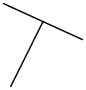
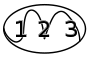

Беседа 3551 от 3877 · Беинса Дуно
Светлина, топлина и сила
„Отче наш“
„Изгрява Слънцето“
Втория път нарисувайте по един крак. Как ще нарисувате десния крак на човека? Аз да съм на ваше място, ще туря крака долу и ще го заобиколя. Който не може да го нарисува, да вземе да заобиколи крака си. Давам ви нещо, което нито един от вас не може да не направи.
Хората са изгубили онази вътрешна свенливост да има нещо, от което ние да се свеним един от друг. Доста мъчно изкуство е в подробности да нарисуваш ръката. Ръката носи някои големи способности. По нея се познава човешкият характер. Религиозен ли е, съвестен ли е, справедлив ли е, умен ли е, порядъчен ли е, честен ли е или нечестен, здрав ли е или не е здрав. Всичко туй показва ръката.
Има много неща за учене. Вземете например, някой човек не може да пее. В човека има две течения. Едното аз го наричам електрическо течение, което изстудява човека. Когато то е силно, човек е студен. Другото, магнетичното, когато е силно, човек е топъл. С топлите течения и студените течения… Едно семе може да го садиш, ако теченията са топли; ако са студени, семената не никнат. Топли трябва да бъдат теченията. Плюс трябва да има няколко спомагателни средства: светлина, топлина и влага. После, ние сме свикнали да мислим, че няма философия в светлината. От количеството на светлината, която приема, от количеството на топлината, която приема и от количеството на влагата, която приема зависи някой път неговото състояние. При сегашните условия, човек и да знае, ще се спъва. Ако човекът е разумен, има един вид болести; ако човек е неразумен, има друг вид болести. Ако е добър, има един вид болести. Пък човек не може да не страда. Ако не е добър, има друг вид болести. Ако е справедлив, има един вид болести; ако не е справедлив, друг вид болести. Казвате: „Добър човек е.“ Болестта се дава в училище като задача. Всички задачи знае ли ученикът? Не знае.
Имате числата 1, 2, 3. От тях зависи всичко. Ако разбираш свойствата на единицата, не само формално какво нещо е единицата, ако разбираш свойствата на двойката и ако разбираш свойствата на тройката, ако разбираш идеята, която носят, съвсем друг въпрос е. И техните отражения като стенографията. Как се пише 1?
За да бъде един човек личност… Каква грамадна разлика съществува между един човек и едно животно. Между един човек и един вол в какво седи разликата? Няма да се впущаме в подробности в какво седи. Някой седи, изправи се. Че човек трябва да ходи прав, но още като ходи прав, ще знае дали функционира главата му, ще знае дали функционира добре сърцето му и ще знае дали функционира добре стомахът му. Още като ходи прав, ще знаеш дали добре мисли, дали добре чувствува, религиозните му чувства какви са. В животните религиозните чувства са почти много слабо развити, разумността е много слабо развита.

Вие носите една [стомна] от 10 кила. Вървите при обикновено положение. Изправен сте. Но щом вземете 10-те кила, носите стомната, навеждате се. С колко сте се навели, за да пазите равновесие? Казвам: Каква е причината, че сте се навели? Причината е, че от едната страна е по-тежко и вие, за да запазите равновесие, сте се навели. Ако сте много силен, може да вървите прав. Някой върви и се прегърбил. Защо, какво има? Защото отзад се е натоварил с материални работи и за да не падне, той се навежда, върви напред, за да пази равновесие. Който не разбира, казва: „Какво ще бъде?“ Големият товар, който е на гърба, кара човека да се навежда. Животните защо са ходили хоризонтално? За да не падат. Много натоварени са били. Господ е трябвало постепенно да ги отучи, да се отказват от разните блага. Колко хиляди години е трябвало да ги отучи, докато се откажат. Не да се откажат съвършено, но да нямат излишен товар на гърба.
Вие тръгнете на екскурзия и се натоварите много. Един наш приятел, аз веднъж [му] дадох една задача да ходи с една стомна. Той турил една голяма раница на гърба си, когато трябваше да върви без раница, с една малка стомна. А той тръгнал с голяма раница и със стомна. И там някъде става разрив, сърцето му било слабо, пресилил се. Казвам: Човек не трябва да се пресиля, никак не трябва да се пресиля.
Невидимият свят иска ние да бъдем свободни. Казва: „Как ще бъдем свободни? Трябва да храним децата си, да се гледаме, като мислим какво ще направим.“ Да допуснем, че нямате хляб и мислите откъде ще вземете хляб. След като си блъскате главата цялата нощ какво ще направите, дали ще може да вземете или не… Ние си блъскаме главата за нищо.
Какви са причините, че си блъскаме главата? Човекът го е страх. Страхът не е лошо. Без страха човек страда и със страха страда. Без страха страданията щяха да бъдат два пъти по-тежки. Страхът ни избавя от много несгоди на живота. Кара ни да мислим. Върху страха е обоснована човешката съвест. Животните развиват страха. Най-високото чувство, което животните развиват, е страхът.
Понеже човек е направил животните, Бог трябваше да го извади от животните, да го [тури] в рая и човек имаше повече страх. Трябваше Бог да премахне страха. Приспа страха у човека, тури го в рая. Направи му градина, да има да яде. „Няма какво да се боиш.“ Обаче там имаше едно дърво, от което само боговете се хранеха, тъй нареченото дърво за познаването на доброто и злото. Казва: „От туй дърво няма да ядете, защото ако ядете, ще дойдат най-лошите последствия. Него да не бутате.“ Жената, като нямала страх, смела (ако страхът не беше приспан, щеше да се бои), не знае какво нещо е страх, смела, забрави, че Господ каза да не ядат от това дърво. Като погледна туй дърво, то беше толкоз хубаво, че си откъсна. Казват там, че са я изкусили. Както и да приказват, туй дърво беше толкоз хубаво, че като го погледна, дървото, то само по себе си започна да говори на нея. Дървото започна да говори, но тази змия беше увита около дървото и така заедно ѝ проговориха. (Как тъй дървото да проговори? Дърво е. Дърветата не говорят.) Казва: „Ние, дърветата сме тук, много умни сме, като нас няма. Който яде от плода, като Бога става всесилен.“ Тогава – много лесна работа. Обаче щом яде, събуди се страхът у нея. Ражда се разликата. При яденето от това дърво един става силен, един – слаб.
Закон е: Силният винаги изнасилва слабия. Туй е едно от правилата. Щом човек стане силен, насилието е готово. Щом стане слаб, насилието ще дойде на гърба. Щом си слаб, всеки ще те насилва; щом си силен, ти ще насилваш. Понеже Бог е най-силният, Него няма кой да Го насилва. Той е свободен. Единственият, който е свободен, то е Господ, понеже няма по-силен от Него.
И така се събуди страхът. Виждаме двамата, Адам и Ева, се скриха. Адам се скри и Ева се скри. Не се скриха на едно място. И двамата толкоз се уплашиха, че тя се скри на едно място, а той – на друго. Дойде Господ да ги търси и надвечер го намери под една шубрачка. Изкоби Адам и започна да трепери. Казва: „Чух гласа Ти, но се убоях, защото съм гол.“ Чул гласа Адам. Адам и Господ тръгнаха и Адам започна да търси Ева. Той като викал Ева, да не чуе Господ. Казва: „Чух Те, срам ме беше да изляза, понеже съм гола.“ Адам на Господа казва, че е гол, Ева на Адама казва, че е гола.
Аз говоря за същината на голотата. Всякога човек е гол, когато има работи, които не съзнава. Съзнава, че разбира, представя си, че знае. Сегашните хора по някой път мислят, че го знаят.
Ще ви наведа един анекдот. Невероятен анекдот е той. На един цар му се ревнало да има дрехи, които да не са пипани от човешка ръка. Търсил, търсил и най-после се явява един, който казва: „Аз мога да изтъка дрехи без пипане.“ Турил той един стан, турил въображаемо кросно, взел въображаеми прежди и започнал да тъче. Той все тъче. Праща царят своите министри да видят как върви работата. Всички казват, че се тъче платното, а нищо не виждат. Понеже той си маха ръцете, като че тъче, всички казват: „Тъче се.“ Всички князе са се извървели, дошъл и царят. И той нищо не вижда. Казва: „Платното е много хубаво.“ Намерил един голям шивач, най-знаменития. Изкарали въображаемия плат и той ушил на царя [дрехи] от него. Царят въодушевен, трябвало да хвърли дрехите си и да облече нови дрехи. Всички пляскат, казват: „Много са хубави дрехите.“ Едно дете извикало: „Виж, царят е гол!“ Всички го виждат, че е гол, а казват, че е облечен. Детето като погледнало царя, казва: „Гол е царят.“ Вижда, че няма никаква дреха.
Всеки, който носи изтъркани дрехи, ходи гол. Онзи, който има знание, той се отличава. Той се справя със своите мъчнотии. Човек, който не може да се справи със своите мъчнотии, той е гол, голота има. Навсякъде, където не може да се справиш, гол си. Ако не може да се справиш със сиромашията, гол си. Ако не може да се справиш с богатството, гол си. Ако не може да се справиш с науката, гол си. Ако не може да се справиш със своите слабости, ти си гол човек. Те и преди, Адам и Ева, ходиха голи, но понеже бяха чисти, и бяха облечени, светлина имаха. Друго зрение имаха. После видяха, че са голи.
Сегашните хора виждат голотата повече. Ако един човек е чист, никога няма да обърне внимание на своята голота. Него занимават други работи. Или, ако е съвсем чист, ще издава от себе си светлина, голотата ще бъде покрита. Хората издаваха в рая светлина в себе си, която ги обличаше. Щом съгрешиха, светлината престана. Тогава явиха се линиите на тяхната голота.
Лошо ли е човек да бъде гол? Питам тогава: защо художниците рисуват Христа гол, нито шапка, нито дрехи, съвършено гол? Тъй са мускулите му. Значи донякъде рисуват Божествените Му дрехи. Туй, което художниците рисуват, е тяхна идея. Идеята на художниците е една: човек трябва да бъде чист. Ние казваме: „Да се повърнем.“ Да се не отричаме от сиромашията. Нас ни е страх. Сиромашията е свързана с гладуването. Всеки човек, който няма какво да яде, е сиромах. И същевременно с туй причинява страдание. Казва: „Сиромах ли си, ще гладуваш, богат ли си, ще ядеш.“ Не всякога богатите хора може да ядат. Човек е богат, но е развален стомахът му.
Връщам се веднъж от Княжево за София. Двама богаташи се разправят, седнали в трамвая. Слушам, единият казва: „Не ми позволяват да ям.“ – „Как, казва, кой смее да не ти позволи? Не си беден, ще ядеш, печени пражоли, кокошки. Кой може да ти забрани? Каквото ядене искаш, ще ядеш.“ – „Стомахът – казва – не ми позволява.“ – „А-а-а, стомахът не позволява.“ Казвам: Има на човека нещо, което не се допуща; нещо се допуща.
Казвам: Образуват се три линии. Едната линия е пасивна, другата е активна. Пасивните неща правят човека инертен. Седиш ти, не ти се работи, казваш: „Не трябва да се работи.“ И тъй човек изгубва своята еластичност. С години като не си ходил, после не може да ходиш. Стари хора има, дълго време като не ходят, че старият казва: „Дълго време съм ходил, сега почивам.“ Седне старият и започва да почива. Аз обяснявам причината на старостта. Детето е пасивно. Вземе се семето от хамбаря и се посее. Старият човек е посятото семе. Като седне, в земята се загнезди, пуща корени, не може да се мръдне. Старият човек е собственик, на едно място е. Дърветата са първите, които учеха учението за собственост. Щом ти не може да се движиш бързо, ти си собственик, стоиш на едно място. Щом си подвижен, не си станал собственик. Детето, като го турят в земята, и то става собственик.
Казвам: Тази, пасивната линия, върху нея стават всичките движения. Докато ние се намираме под пасивността, която ни заповядва, ние не се движим.
Един англичанин ходил в Индия на лов. Англичаните изобщо обичат спорта. Обаче като носел пушката, удря го един тигър, счупва му ръката, занася го на малките си (тя била тигрица). Като рече той да си повдигне главата, тя му натисне главата, казва: „Не се позволява да ми плашиш децата.“ Той рече пак да си повдигне главата, тя дойде, натисне го. Тя учела малките си деца как да давят един англичанин, да бъдат смели. Те нямат опитност. На този англичанин му дошло на ум, че има пушка. Прицелил се и убива майката. След това казва: „Не ми беше мъчно, че ми счупи ръката“, но понеже му натискала главата, туй му било обидно. Защо той ще ходи да носи една пушка, да бие? Ние се извиняваме, че някой убил един вълк, една кобра. Ами когато убиеш една сърна, един елен, онази малката птичка, какво те оправдава? Няма никакво оправдание.
Та, казвам: Ние сме направени почти от три линии. Едни линии, които са хоризонтални, които показват едно пасивно състояние, инертност. Други линии, които са перпендикулярни на първата. После криви линии има. Хоризонталните линии преобладават у мъжа. В жената има повече кръгли линии. В мъжа активните, а пасивните преобладават у жената. В жените преобладават кривите линии. Кривата линия, това е пътят на най-малкото съпротивление. Жените по крива линия вървят. Вървят по пътя на най-малкото съпротивление. Затова е крива линията. Може да върви отвътре, но може тази линия да върви и отвън.
Следователно, от гледището на кривите линии, ако разглеждаме отвътре света, ще бъде вдлъбнат; ако го разглеждаме отвън, ще ни се покаже корубест. Ако пътуваме по тия линии, нас ни се струва, че са хоризонтални. Но в света такива дълги хоризонтални линии няма. Туй показва, че има кръг и понеже центърът е много далече на тази линия, то повърхността ни се вижда като хоризонтална. Линиите образуват препятствие. Перпендикулярните линии дават импулс. По хоризонталните линии се движи електричеството, а по кривите линии се движи магнетизмът.
Следователно в жената, в кривите линии, има повече магнетизъм, а в мъжа има повече електричество. Понеже магнетизмът е необходим за електричеството като поле, дето да развие своята деятелност, затова има съответствие между мъжа и жената, обмяна на силите на електричеството със силите на магнетизма. Понеже магнетизмът остава неразработен, електричеството носи в себе си Божиите семена, които може да се посеят в полето на магнетизма. В туй отношение мъжът и жената служат, за да се разработят ония дарби, с които човек е надарен. Чувствата са семена, които трябва да се обработят; мислите са семена, които трябва да се обработят и постъпките са семена, които трябва да се обработят. Една мисъл трябва да се обработи, за да ти стане ясна. Едно чувство трябва да го обработиш, да влезе в съзнанието в съприкосновение със самата мисъл. Ако имаш една бучка захар и близнеш с езика си, може да имаш отношение. Ако не близнеш, тя не може да има отношение към тебе.
Тъй, както разглеждаме, животът е механичен. Искаме всички неща да ги придобием механично. Придобито е само туй, което е минало през човешкия ум, което е минало през човешкото сърце, което е минало през човешката воля. Само то в човека остава неговата способност. Всяко нещо, което не е минало през човешкия ум, всяко нещо, което не е минало през човешкото сърце и всяко нещо, което не е минало през човешката воля и човешката душа, те са чужди неща, отвън. Може да имаш милиони. То е заблуждение. Ти се самоизлъгваш, че си богат. Човек утре като умре, го оставят на Земята. Мислиш, че си красив. Утре това тяло го вземат и те изпращат. Казват: „Той умря.“ Туй, което умира, не е човекът. Човек никога не може да умре. Човек, направен по образ и подобие, туй, което е от Бога, Божественото дихание, не може да умре.
Казвам: Външната форма, което не е Божествено, умира. Няма нещо лошо в това човек да умре. Лошото е по някой път да умре вашата къща. Имате малка хижица, изгори. Това става причина да съградите по-хубава къща. И нея може да съборите, докато най-после съградите една къща от мрамор. От мрамор като съградите, става нехигиенична. Тогава кои къщи ще бъдат най-здравословни? От стъкло ще има за в бъдеще, от хубаво прозрачно стъкло, през което светлината да може да минава. Ще турим малко тънко платно, с което да регулираме светлината вътре, ако искаме повече или по-малко светлина.
Та, казвам, ако искаме да възпитаваме човека. Модерно иска да възпитава човека… Да се възпита човешкият мозък, най-първо трябва да започне да се възпитава човешкото сърце. И най-после трябва да се възпита човешкото тяло. Човешкото тяло може да се възпита чрез храната. Каквато храна приемаш, такова и тялото ще стане. Каквото чувствуваш, такова и сърцето ще стане. Каквото мислиш, такъв умът ще стане.
Сега, мисълта е свързана със светлината, сърцето е свързано с топлината, а тялото е свързано със силата. Светлината я виждаме, топлината я чувствуваме, и силата я опитваме и възприемаме. Като ни хване един човек с ръката, ти чувствуваш, той не е нито светъл, нито топъл, задържа те – значи този човек има сила. Какво нещо е силата? Туй, което нито е топло, нито е светло, пък то те държи. То е сила. Що е мисълта? Туй, което разкрива света пред тебе. Що е топлината? Туй, което възраства нещата. Да имате ясна представа. Следователно чувствата помагат да възродят в нас мисълта. Защото мисълта има качества. И мисълта, и тя трябва да расте. Растежът зависи от топлината. За да стане тази мисъл явна, зависи от светлината. Да добие собственост, да бъде самостоятелна, необходима е сила.
Та, казвам: За нас при сегашните условия необходима е за човека мисълта, необходимо е здравото сърце, силните чувства, здравите чувства, необходима е и силата. Значи на човешката душа ѝ са необходими светлина, топлина и сила. [Светлината] се добива чрез мозъка, топлината се добива чрез сърцето, а силата – чрез тялото. Следователно ако ти чрез сърцето не може да добиеш топлина, ти си слаб човек. Ако ти чрез ума не може да добиеш светлина, ти си слаб човек умствено. Ако чрез тялото не може да добиеш сила, ти си слаб телесно. Всичките хора, за да не боледуват, трябва да бъдат силни. За да не страда сърцето, трябва да имат топлина и за да няма противоречия за ума, светлина трябва да имат.
Сега това, което ви говоря, е толкоз отвлечено. Казвате: „Де е тази светлина? Де е тази Божествена сила?“ На Земята светлината, топлината и силата приемаме от Слънцето. На физическото поле. Животните нищо не знаят от тази наука. Толкоз светлина, колкото им трябва, приемат; толкоз топлина, колкото им трябва, приемат и толкоз сила, колкото им трябва, приемат.
Някои от допотопните животни развиха силата. Някои от тия животни създадоха такива грамадни тела, по 32 метра дължина. Нашият салон е 18 метра дълъг. Приблизително два пъти по-дълги, отколкото е този салон, такива грамадни животни. Питам сега: защо ти е такова едно тяло? Как ще го храниш? Господ намери за непотребни такива тела, защото не ги направи Господ така големи. Господ каза: „Да станат животните“ и те станаха. И като каза Господ, някои от тях направиха големи тела. Някои станаха много малки. Тези, които пожелаха големите тела, Той казва: „Много разноски, безпредметно е.“ Това животно е погълнато само с ядене. Един от тия големите мамонти, с 32 метра тяло, в България за 2–3 дена, в която гора влезе, ще унищожи цялата гора. И ако има десетина мамонти, ще унищожат всичките гори и няма да има гора.
Сега у нас са останали желанията на мамонтите. Не сме се освободили на Земята от големите работи. Всеки иска голямо богатство. Всеки иска милиони, 10, 20, 100 милиона. Всеки иска да бъде много силен, много голям. Колко силен трябва да бъде? Природата ни е дала с малко материя да развием голяма сила. Може да се развие. С малко материя може да се образува голяма светлина, голяма топлина, но трябва да знае човек как да я образува. За в бъдеще това ще му бъде наука.
Успехът на човека зависи от светлината, която се е образувала. Успехът на човека не зависи от външната светлина, която съществува в природата. Според светлината, която е в ума ти вътре, според топлината, която е вътре в сърцето ти и според степента на силата, човешката дарба се определя. Защото дарбите, които Бог турил, те растат при известни условия. Те растат при нормална светлина, при нормална топлина и при нормална сила. Някой път казват: „Защо Господ ме така направил? Господ ме надарил, за тия дарби няма достатъчно светлина, няма достатъчно топлина и сила, нищо не може да се развие.“ Имаш отрицателно отношение, считаш този е учен, този е невежа.
Туй, което ние считаме невежество, то съществува вън от природата. В природата няма невежество. Ти считаш, че едно дърво е невежа. Ти се заблуждаваш. Дърветата са толкоз учени, те са по-учени от нашите химици. Едно дърво е по-голям специалист. Един химик не може да направи една ябълка така вкусна. Туй дърво, което ти го считаш за невежа, прави най-хубавите плодове. Туй, глупавото дърво, като пусне корени, изважда оттам, отдето един химик никога не може да извади храна. Растението намира храна. Растенията знаят да сгъстяват светлината и да образуват най-хубавите плодове. Много учени са. После казвате, че те не виждат. Много очи имат. Растенията имат не едно, а хиляди очи. На всеки лист имат по едно око. Ти като седиш при някое растение, мислиш, че не те видяло. Като идеш при него, растението знае какъв си. Има растения толкоз чувствителни, че ако се допре до тях един разбойник, те изсъхват. Те са толкоз чисти, че не живеят, преместват се на друго място, напускат къщата си.
Изсъхването уподобява на следния анекдот. Той е из християнския живот. В един монастир умира игуменът. Направил доста големи злоупотребления и като дошъл новият игумен на монастиря, сметките объркани. Започнал да се моли да дойде стария игумен да оправи сметките, защото него държат отговорен. Като се молил, дошъл игуменът, но той бил в ада. Оправил сметките в монастиря, но там, дето стъпел кракът му, оттам насетне никой човек не могъл да стъпи в монастиря от воня. Всичките изоставили монастиря, от голямата воня никой не могъл да остане.
Казвам: Няма по-лоша воня от един грешен човек. Най-хубавото ухание е праведният. Ако си грешен, започват от тебе да странят хората. Ако станат мислите ти негативни, не са чисти чувствата ти, не са чисти и постъпките ти, хората започват да те избягват. Чисти мисли имаш, чисти чувства имаш – всеки човек се приближава.
На всички се преподава учението. Казват: „Да идем в оня свят.“ По този начин в оня свят не се отива. Тъй, както мислите, не се отива. За да идеш в училището, да се учиш в отделенията, детето най-първо трябва да бъде здраво и да бъде развито. Ако е малоумно, ще кажат: „Вземете си детето назад.“ Ако си в гимназията, трябва да държиш изпит. Ако си в университета, трябва да държиш изпит. Ние, набожните хора, мислим да идем в небето, да ни приемат. То е място на чистота. Ако си умен и справедлив, може да идеш, но ако не си умен, тук на Земята ще останеш.
Често, като умре някой, ме питат къде е. Какво да им кажа? Аз си мълча. Преди години аз имах един познат, евангелски проповедник, може да ви кажа името, но не ви е потребно. Този човек беше недоволен, че е проповедник. Често на мене ми казваше: „Когато хората си уреждаха работата, аз пасях магарето на владиката.“ С това искаше да каже, че е проповедник на хората. Когато хората си уреждаха материалните работи, той е проповядвал. После той стана търговец, но после чух, че се е самоубил. Дошъл и питат къде е. На никакъв оня свят не е. Имах една соба и дошъл и 3 дена стои на кюнеца. Рекох: „Кое е по-хубаво: да пасеш магарето на владиката или да стоиш на кюнеца?“ Казва: „Да ме повърне Господ.“ Казвам: „Добре, защо се самоуби, трябваше да издържиш изпита.“ Доста умен човек, красноречив, обаче в педагогическо отношение имаше криви разбирания. Той мислеше, че каквато и да е жена, може да я възпита. За да докаже своята теория, той се оженил за една хладнокръвна жена. Тя не обича да работи. Той вдига шум, тя не работи. После този педагог казваше: „Първата погрешка направих, че се ожених за жена, която не ме обича. Десет години си блъсках главата, не може да ме обикне.“ Той ще говори, ще кряска, всичко ще донесе, тя ще му каже: „Не се тревожи.“ Той ще дойде вкъщи и тя ще му каже: „Не се тревожи.“
Сега, по отношение на Бога. Ние по някой път искаме да заставим Бога да мисли за нас. То е невъзможно. Ние искаме да Го заставим да мисли за нас. Молим се, че каквото ние кажем, като не стане според както ние искаме, казваме: „Как да не стане?“ Ако стане, мислим, че то е станало заради нас. То не е така. Ние имаме едно криво схващане. Онзи, любящият баща, преди детето да е поискало, той е подготвил [дрехи], той ги носи и от туй, което е приготвил, даде му. Бащата е предвидил, че му трябват дрехи и ги носи. Детето казва: „Дай да ги облека.“ Искате туй, което Бог е приготвил, да ви го даде. Ти искаш да чертаеш какви дрехи да ти ушият, [с] какви плодове, [с] каква храна да те нахранят. Туй не е на място.
Сега какъв би бил животът ни, ако сме извън светлината, извън топлината, извън силата? То е най-големият затвор, в който човек може да бъде. А пък да имаме свободата да възприемем светлината, топлината и силата, то е най-голямата свобода, която Бог ни дал в света. Човек е свободен дотолкоз, доколкото в ума има светлина, доколкото топлината е в сърцето, доколкото силата е в тялото. Свободен е, като има светлина, топлина и сила.
Когато говорим, че трябва да обичаме, разбираме, че като обичаш, усилва се умът. Обич, която не усилва ума, не е обич. Ум, който не усилва сърцето, не е ум. Човешката воля усилва чувствата. Човешкото сърце става здраво. Сърцето, което чувствува правилно, усилва ума. Ум, който е силен, сърце, което е силно, тяло, което е силно, умът, сърцето и тялото съединени образуват човешката сила. Тогава не схващайте работата така, че сърцето влиза в стълкновение с ума. Щом влязат умът и сърцето в стълкновение, всичките работи се спират. Сега имаме в света туй, голямото нещастие. Желанията са в стълкновение. Става стълкновение между ума и сърцето. Умът и сърцето са в стълкновение с човешкото тяло.
Първото нещо при възпитанието е: нормална Божествена светлина, нормална Божествена топлина и нормална Божествена сила, която трябва да възприемаме.
Та, казвам: Онези от вас, които искате да бъдете от тия ученици, давам ви една задача сега. Цяла една седмица, до следния път, умът ви да не влезе в стълкновение със сърцето, сърцето да не влезе в стълкновение с ума, умът и сърцето да не влязат в стълкновение с тялото. Ако може да го направите, все таки ще има едно малко подобрение. Аз гледам какво е навикът. Плюе човек дето не трябва, по нивите се секне, по улиците се секне. Един наш приятел слиза в града и плюе по улицата, че го глобили. Ще извадиш кърпата си. Българинът е практичен, след като плюе, с крак го изтрие. Влезеш в някой салон, дето е постлано с килим, пак ще плюеш.
Със старите методи трябва да се ликвидира, да се започне с нови. Като ходиш, да си сляп, да не виждаш погрешките, да може да виждаш само доброто. Като ходиш, да виждаш 3 неща: с ума си да виждаш, че са умни, със сърцето си да виждаш, че са любящи и с тялото си да виждаш, че са здрави, любящи. Всички други работи на заден план да бъдат. Най-първо като погледнеш, да знаеш, че имат светлина, имат топлина и сила имат.
Та, казвам: Лесна работа. Отива един индуски ученик при един от адептите да му предава знание. Адептът му казва само така: „Цяла седмица ще мислиш за всички други работи в света, за целия свят може да мислиш, само за едно нещо няма да мислиш – за носорога, за него няма да мислиш.“ Казва му: „Това може да го направиш, само за една седмица.“ Връща се ученикът след една седмица и казва: „За всичко не мислих, но през цялата седмица само за носорога мислих.“ През цялата седмица мислил за носорога. Ще умреш? Ще умреш. Беднотия? Беднотия. Това няма, това е носорогът. За всичко друго мисли, само за носорога не мисли.
Казвам: Мислете за светлината, мислете за топлината, мислете за Божествената мисъл, за Божествените чувства, за Божествената сила, която се изявява в природата. Не трябват правила. Може друг път да ви дам.
Най-първо тази школа започва с музика. По особен начин трябва да пеят хората.
Сега вие влизате тук в новата школа. Един мисли, че е жена, друг мисли, че е мъж, друг мисли, че е женен, че деца има. Вие не сте свободни хора. Дошъл си тук и мислиш какво ще стане с децата; дошъл си тук и мислиш с жена ти какво ще стане. Тя те гледа, не търсите знанието, отвън гледаш. Мъжът гледа жена си и жената гледа мъжа си. Престанете да се гледате един друг. Ти като дойдеш, няма да мислиш, че жена имаш. „Които се сподобят с бъдещия век, нито се женят, нито за мъж отиват.“ Нито мъжът отива за жена, нито жената отива за мъж.
Казвате: „Какво ще бъде?“ Не търсете външната светлина, не търсете външната топлина, не търсете външната сила, но онова, което Христос подразбира – вътрешната светлина и топлина. Ти като разбираш вътрешната топлина, ще разбереш и външния свят, който Бог е направил. Бог, Който е вътре в нас, направил света подобен, според както е Той, по образ и подобие Свое. За да познаем един човек, трябва да имаме Божествената светлина. Сега някои гадаят.

Онова, което имаме сега, не е лошо. От туй, което имаме, е добро. Но доброто, което имаме, трябва да го напуснем. Ти, като малко детенце, имаш хубава количка. Но ти израснал си вече, ще напуснеш количката. Количката трябва да напуснем по една необходимост. Благодари, че си излязъл. Колкото и да е красива и да ти е удобна, по-хубаво е на краката си да уповаваш, отколкото в количка да те возят. Ако цял живот те возят, какъв човек ще бъдеш? Като излезеш от количката, с краката си ще ходиш. Миналите блага, в които сме живели, трябва да ги напуснем. „Едно време аз тъй вярвах.“ Едно време ти си се молил при един златен телец и си казвал: „Ваале, Ваале!“ Един ден познаваш, един златен бог все таки е ценен. Ако е направен от 10, 20 или 30 килограма злато, днес колко струват те? От един златен телец ти няма да намериш туй, което търсиш. Ще намериш само външните блага. Един бог, който не може да задоволи нашия ум, един бог, който не може да задоволи нашата душа, не е никакво божество.
Казвам: Бог, Който е направил външния свят, Който ни задоволява, Него трябва да изучаваме. Всички други неща са второстепенни. Да имаме отношение към Онзи, Който внася светлина.
Тия възгледи, които всички имате, вие трябва да ги напуснете. Щастливи ли сте с тия възгледи? Не сте. Казва: „Аз много вярвам в Бога.“ Той български не знае да говори хубаво, нито един език не знае да говори хубаво, а казва, че чрез него Духът говори. Не е никакъв Дух. Да говориш един език, трябва да го говориш хубаво. Казва: „Халя-хуля, халя-хуля.“ Това не е нищо. Ако кажеш някоя арабска дума, или като кажеш „халя-хуля, халя-хуля“, знаеш какво значи това? На български какво означава? Най-лесното е, което не знаеш, може да плескаш. Халя, от него може да стане хала. Никакви езици не са това.
Три неща: светлина Божествена за ума, топлина Божествена за сърцето, сила Божествена за тялото. Това е новото учение.
Сега туй, което имате, е добро. Но по една необходимост трябва да излезете от него. Гъсеницата колкото и да е голяма, трябва да напусне тази форма. Всички трябва да напуснем материалния свят, в който сме живели по една необходимост. Каквото и да е, трябва да умреш. Значи старото тяло ще напуснеш, за да ти дадат ново. Казвате: „Умря.“ Радвай се, че умря. Всички не скърбят, когато някой умре. Кога скърбим, когато някой умре? Когато умре, че ни завлече парите, скърбим. Не искаме да умира, докато не изплати. Ако има някой, който иска да ни направи добро, не искаме да умре. Онзи, който иска да ни направи пакост, искаме да умре. Във всичките разбирания нямаме трезва мисъл.
Ние трябва да желаем да живеят всичките хора, понеже са необходими заради нас. Когато един човек умира отвън, умира нещо в нас. Когато един човек се ражда, и в нас се ражда нещо. Някои хора в света трябва да умрат, за да се подобри светът. Някои трябва да се родят, пак за да се подобри светът. И когато се раждат хората, светът се подобрява, и когато умират хората, светът се подобрява. То е Божествено. Умираме. Защо? За да се подобри светът. Раждаме се. Защо? За да се подобри светът.
Това е живот вечен, да позная Тебе, Единаго Истиннаго Бога и Христа, Когото си проводил.
31-ва лекция от XXI година
на Общия окултен клас (1941–1942),
държана от Учителя
на 29.IV.1942 г., сряда, 5 ч. сутринта,
София – Изгрев.